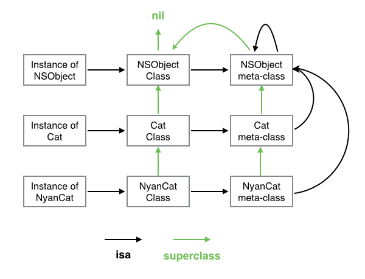

---
layout: post
title: Runtime系列一 Objective-C对象模型
date: 2018-08-31 23:34:15.000000000 +09:00
tags: iOS技术
- tags: iOS技术
- 一：前言
- 二：NSObject类的实现
- 三：NSObject对象的表示objc_object
- 四：元类（实例对象，类对象，元类之间的关系）
- 六：Runtime几个术语的结构分析
- 七：相关的API
- 八：API示例Demo
一：前言
Objective-c的编译器将OC代码编译成可执行二进制文件。操作系统在装载后，会在运行时运行时系统下运行该程序（此时运行时系统就是Runtime实现Objective-C机制的一个运行库，可以理解成专门运行Object-C的一个小系统）。
Runtime库主要做下面几件事：
封装
在这个库中，对象可以用C语言中的结构体表示，而方法可以用C函数来实现，另外再加上了一些额外的特性。这些结构体和函数被runtime函数封装后，我们就可以在程序运行时创建，检查，修改类、对象和它们的方法了。找出方法的最终执行代码
当程序执行[object doSomething]时，会向消息接收者(object)发送一条消息(doSomething)，runtime会根据消息接收者是否能响应该消息而做出不同的反应。这将在后面详细介绍。
二：NSObject类的实现
//定义NSObject
@interface NSObject <NSObject> {
Class isa;
}
//定义Class类型
typedef struct objc_class *Class;
//定义objc_class
struct objc_class {
Class isa;
#if !__OBJC2__
Class _Nullable super_class OBJC2_UNAVAILABLE;
const char * _Nonnull name OBJC2_UNAVAILABLE;
long version OBJC2_UNAVAILABLE;
long info OBJC2_UNAVAILABLE;
long instance_size OBJC2_UNAVAILABLE;
struct objc_ivar_list * _Nullable ivars OBJC2_UNAVAILABLE;
struct objc_method_list * _Nullable * _Nullable methodLists OBJC2_UNAVAILABLE;
struct objc_cache * _Nonnull cache OBJC2_UNAVAILABLE;
struct objc_protocol_list * _Nullable protocols OBJC2_UNAVAILABLE;
#endif
};
由此可见NSObject类是由Class类型来表示的，它实际上是一个指向objc_class结构体的指针。
objc_class字段说明
isa：所有类的自身也是一个对象，这个对象的Class里面也有各个ias指针，它指向metaClass
super_class：指向该类的父类
cache：在我们每次调用过一个方法后，这个方法就会被缓存到cached列表中，
下次调用的时候就会在缓存中找，如果cache中没有，就会在methodlist中找。
举例说明
NSArray *array = [NSArray alloc]init];
alloc先执行，发现NSArray没有相应的方法，然后去父类查找。父类发现有，就会根据所需要的内存空间大小开始分配内存空间。alloc同意会加入cache里面。
接着执行init方法，如果NSArray响应该方法，则直接将其加入cache中。不响应就去父类查找。
三：NSObject对象的表示objc_object
表一个类的实例的结构体
这个实例只有指向其所属类的一个指针。当我们向一个Object-C对象发送消息时，运行库会根据实例对象的isa指针找到这个实例对象所属的类。Runtime会根据isa指向所属的类的方法列表及父类方法列表中寻找与消息对应指向的方法。
NSObject是如何根据类创建对象的？这里有很多疑问。？？？？
当创建一个特定类的实例对象时，分配的内存包含一个objc_object数据结构
然后是类的实例变量数据。NSObject类的alloc和allocWithZone:方法使用函数class_createInstance来创建objc_object数据结构。
struct objc_object {
Class isa;
}
type struct objc_object *id;
四：元类（实例对象，类对象，元类之间的关系）
从NSObject的定义了可以看出，每个类都是一个对象（类对象）。
我们在NSArray *array = [NSArray array]使用类方法时幷没有创建对象。
那么类对象的isa指向哪里？（我能达成的共识是对象由isa指向”对象“定义），那么在object里类对象的isa指向叫meta-class.它是类对象的类。
发送实例方法时，会在类对象方法列表里找，幷缓存
发送类方法时，会在元类对象的方法列表里找，幷缓存
那么元类的的isa指针又指向哪里呢？
Object-c的设计者为了不让其无限循环下去，将元类的isa指向了其最基类。而最基类的meta-class的isa指向自己。这样就形成一个闭环。
类图结构如下(这个图画的真完美)

六：Runtime几个术语的结构分析
SEL
这个术语在头Runtime的头文件里没有看到相关的定义(
这里我们给出推测
type struct objc_selector *SEL
struct objc_selector{
void *sel_id;
const char *sel_types;
}
所以从这里可以将SEL理解成一个char *类型的字符串。这个字符串在method_list里映射了真正的函数实现。
id
typedef struct objc_object *id;
struct objc_object { Class isa; };
id 重新定义为objc_object * 类型（指向对象的指针）。objc_object结构体包含一个isa指针，根据isa指针可以找到所属的类。
注意 isa指针在代码运行时并不总是指向实例对象所属于的类。所以不能依靠它来确定类型，要想确定类型还是需要用对象的class方法。kvo实现原理就是被观察对象的isa指针指向一个中间类而不是真实的类型。
Method
typedef struct objc_method *Method;
struct objc_method {
SEL method_name OBJC2_UNAVAILABLE;
char *method_types OBJC2_UNAVAILABLE;
IMP method_imp OBJC2_UNAVAILABLE;
}
构建Method时需要SEL(方法名),method_types存储参数与返回值的类型编码，IMP函数指针（真正的函数实现）
Ivar
typedef struct objc_ivar *Ivar;
struct objc_ivar {
char *ivar_name OBJC2_UNAVAILABLE;
char *ivar_type OBJC2_UNAVAILABLE;
int ivar_offset OBJC2_UNAVAILABLE;
#ifdef __LP64__
int space OBJC2_UNAVAILABLE;
#endif
}
ivar_name 变量名，ivvar_type变量类型编码
IMP
typedef id (*IMP)(id, SEL, ...);
你会发现 IMP 指向的方法与 objc_msgSend 函数类型相同，参数都包含 id 和 SEL 类型
Cache
在objc_class的结构体中的cache字段，它用于缓存调用过的方法。cahce是指向objc_cache结构体的指针。
struct objc_cache {
unsigned int mask /* total = mask + 1 */ OBJC2_UNAVAILABLE;
unsigned int occupied OBJC2_UNAVAILABLE;
Method _Nullable buckets[1] OBJC2_UNAVAILABLE;
};
occupied 缓存的方法数目
buckets 指向Method数据结构的指针的数组。也就是缓存函数的地方。
Property
typedef struct objc_property *objc_property_t;//这个更常用
可以通过class_copyPropertyList 和 protocol_copyPropertyList 方法获取类和协议中的属性：
objc_property_t *class_copyPropertyList(Class cls, unsigned int *outCount)
objc_property_t *protocol_copyPropertyList(Protocol *proto, unsigned int *outCount)
类型编码
编译器将每个方法的返回值和参数类型编码为一个字符串，并将其与方法的selector关联在一起。这种编码方案在其它情况下也是非常有用的，因此我们可以使用@encode编译器指令来获取它。当给定一个类型时，@encode返回这个类型的字符串编码。这些类型可以是诸如int、指针这样的基本类型，也可以是结构体、类等类型。事实上，任何可以作为sizeof()操作参数的类型都可以用于@encode()。
在Objective-C Runtime Programming Guide中的Type Encoding一节中，列出了Objective-C中所有的类型编码。需要注意的是这些类型很多是与我们用于存档和分发的编码类型是相同的。但有一些不能在存档时使用。
//类型编码
float a[] = {1,2,3};
NSLog(@"array encoding type:%s",@encode(typeof(a)));
NSString *str = @"你好";
NSLog(@"string encoding type:%s",@encode(typeof(str)));
CGFloat ff = 2.0;
NSLog(@"float encoding type:%s",@encode(typeof(ff)));
//结果
array encoding type:[3f]
string encoding type:@
float encoding type:d
七：相关的API
将上述的实例对象，类对象，元类对象概念理解清楚后，理解实例变量，方法列表等信息。使用下列的相关API将易如反掌。
类相关API
const char * class_getName(Class cls);//取类名
Class class_getSuperclass(Class cls);//取父类
BOOL class_isMetaClass(Class cls);//是否是元类
size_t class_getInstanceSize(Class cls);//获取实例变量的大小
成员变量相关API
// 获取类中指定名称实例成员变量的信息
Ivar class_getInstanceVariable ( Class cls, const char *name );
// 获取类成员变量的信息
Ivar class_getClassVariable ( Class cls, const char *name );
// 添加成员变量
BOOL class_addIvar ( Class cls, const char *name, size_t size, uint8_t alignment, const char *types );
// 获取整个成员变量列表
Ivar * class_copyIvarList ( Class cls, unsigned int *outCount );
Objectice-c不支持往已经存在的类中添加实例变量。不管是系统提供的库，还是自己定义的类，都无法动态添加成员变量。（这里联想到了category的实现）但如果我们是通过运行时来创建一个类的话，在该类没注册前是可以添加实例变量的。且只能在objc_allocateClassPair函数与objc_registerClassPair之间调用。（This function may only be called after objc_allocateClassPair and before objc_registerClassPair. Adding an instance variable to an existing class is not supported.）
class_copyIvarList函数，它返回一个指向成员变量信息的数组，数组中每个元素是指向该成员变量信息的objc_ivar结构体的指针。这个数组不包含在父类中声明的变量（注意咯）。使用时，还要注意内存的释放。
属性相关API
// 获取指定的属性
objc_property_t class_getProperty ( Class cls, const char *name );
// 获取属性列表
objc_property_t * class_copyPropertyList ( Class cls, unsigned int *outCount );
// 为类添加属性
BOOL class_addProperty ( Class cls, const char *name, const objc_property_attribute_t *attributes, unsigned int attributeCount );
// 替换类的属性
void class_replaceProperty ( Class cls, const char *name, const objc_property_attribute_t *attributes, unsigned int attributeCount )
Method相关API
// 添加方法
BOOL class_addMethod ( Class cls, SEL name, IMP imp, const char *types );
// 获取实例方法
Method class_getInstanceMethod ( Class cls, SEL name );
// 获取类方法
Method class_getClassMethod ( Class cls, SEL name );
// 获取所有方法的数组
Method * class_copyMethodList ( Class cls, unsigned int *outCount );
// 替代方法的实现
IMP class_replaceMethod ( Class cls, SEL name, IMP imp, const char *types );
// 返回方法的具体实现
IMP class_getMethodImplementation ( Class cls, SEL name );
IMP class_getMethodImplementation_stret ( Class cls, SEL name );
// 类实例是否响应指定的selector
BOOL class_respondsToSelector ( Class cls, SEL sel );
class_addMethod的实现会覆盖父类方法的实现。如果已经存在一个同名的实现，则函数会返回NO。如果要修改已经存在的实现，可以使用method_setImplementation。一个Object-c方法是一个简单的C函数，它至少包含两个参数self,_cmd,所以我们在实现函数替换是或者交换时，要添加这两个参数
void myMethodIMP(id self, SEL _cmd)
{
// implementation ....
}
与成员变量不同的是，我们可以为类动态添加方法，不管这个类是否已存在。
添加方法时，class_addMethod函数后面有一个类型编码。这个类型编码在基本概念里已经做了解释。
八：API示例Demo
Demo源码RunTime相关实践
下面是类的一些基本API使用示例
- (void)viewDidLoad {
[super viewDidLoad];
//与类相关的API
//获得类名
self.view.backgroundColor = [UIColor whiteColor];
const char * resutl0 = class_getName([self class]);//获取类名
NSString *resutlStr = [NSString stringWithUTF8String:resutl0];
NSLog(@"这是resultStr:%@",resutlStr);
//获取父类
Class superClass = class_getSuperclass([self class]);
NSLog(@"这是父类:%@",superClass);
//获取变量大小
size_t classSize = class_getInstanceSize([self class]);
NSLog(@"这是classSize:%zu",classSize);
//是否是元类
if(class_isMetaClass([self class])){
NSLog(@"self class 是元类");
}
if( class_isMetaClass(superClass)){
NSLog(@"superClass是元类");
};
const char * className = object_getClassName([self class]);
Class metaClass = objc_getMetaClass(className);
if(class_isMetaClass(metaClass)){
NSLog(@"是元类");
}
//获取实例变量
const char * dataArrayIvarCstring = [@"_dataArray" UTF8String];
Ivar dataArrayIvar = class_getInstanceVariable([self class], dataArrayIvarCstring);
NSLog(@"这是Ivar:%@", [NSString stringWithUTF8String:ivar_getName(dataArrayIvar)]);
//获取属性(属性会自动生成实例变量)
const char * dataArrayPropertyCstring = [@"dataArray" UTF8String];
objc_property_t dataArrayPropertyr = class_getProperty([self class], dataArrayPropertyCstring);
NSLog(@"这是property:%@", [NSString stringWithUTF8String:property_getName(dataArrayPropertyr)]);
//通过SEL找到Method,并找到相应的实现
IMP doFuncMethodImp = class_getMethodImplementation([self class], @selector(doFunc));
doFuncMethodImp(self,@selector(doFunc));
//获取类方法
Method dofun2Method = class_getClassMethod([self class], @selector(dofunc2));
IMP dofun2MethodImp = method_getImplementation(dofun2Method);
dofun2MethodImp(self,@selector(dofun2Method));
}
下面是动态添加类的实践
#import "Runtime3ViewController.h"
#import <objc/runtime.h>
/*
添加实例变量
添加属性
添加方法
添加协议
*/
@interface Runtime3ViewController ()
@property (nonatomic, strong) UIColor *property2;
@end
@implementation Runtime3ViewController {
NSArray *_property0;
NSArray *property1;
}
- (void)viewDidLoad {
[super viewDidLoad];
self.view.backgroundColor = [UIColor whiteColor];
//动态创建类,从参数里可以看出,可以指定父列
Class CreatClass0 = objc_allocateClassPair([NSObject class], "CreatedClass0", 0);
//动态添加实例变量
class_addIvar(CreatClass0, "_attribute0", sizeof(NSString *), log(sizeof(NSString *)), "i");
Ivar ivar = class_getInstanceVariable(CreatClass0, "_attribute0");
objc_registerClassPair(CreatClass0);
//(添加实例变量后再动态添加属性
objc_property_attribute_t type2 = {"T","@\"NSString\""};//T，属性类型
objc_property_attribute_t ownership2 = {"C",""};//C，属性的修饰符 copy
objc_property_attribute_t backingivar2 ={"V","_attribute0"};//V，属性对应的实例变量值
objc_property_attribute_t attrs2[] = { type2, ownership2, backingivar2 };//属性数组
class_addProperty(CreatClass0, "_attribute0", attrs2, 3);//为一个类添加上面设置的属性
SEL getter = NSSelectorFromString(@"attribute0");
SEL setter= NSSelectorFromString(@"setAttribute0:");
//(添加属性后，再为属性添加get,set的方法，将SEL,与实现绑定,并添加到类里
BOOL suc0 = class_addMethod(CreatClass0, getter, (IMP)attribute0Getter, "@@:");
BOOL suc1 = class_addMethod(CreatClass0, setter, (IMP)attribute0Setter, "v@:@");
NSLog(@"这是suc0:%@,suc1:%@",@(suc0),@(suc1));
//根据动态创建的类，创建对象
id idClass = [[CreatClass0 alloc]init];
//执行动态创建的类的方法
[idClass performSelector:setter withObject:@"你好"];
NSLog(@"这是被设置的:%@",[idClass performSelector:getter withObject:nil]);
//获取整理实例犯法
unsigned int copycopyMethodListCount = 0;
Method *methods = class_copyMethodList(CreatClass0, ©copyMethodListCount);
for (int i = 0; i< copycopyMethodListCount; i++) {
Method tmpMethod = methods[i];
SEL tmpName = method_getName(tmpMethod);
NSLog(@"这是所有函数的名字:%@", NSStringFromSelector(tmpName));
}
//添加协议
class_addProtocol(CreatClass0, NSProtocolFromString(@"UITableViewDelegate"));
}
//get方法
NSString *attribute0Getter(id classInstance, SEL _cmd) {
Ivar ivar = class_getInstanceVariable([classInstance class], "_attribute0");//获取变量,如果没获取到说明不存在
return object_getIvar(classInstance, ivar);
}
//set方法
void attribute0Setter(id classInstance, SEL _cmd, NSString *newName) {
Ivar ivar = class_getInstanceVariable([classInstance class], "_attribute0");//获取变量,如果没获取到说明不存在
id oldName = object_getIvar(classInstance, ivar);
if (oldName != newName) object_setIvar(classInstance, ivar, [newName copy]);
}
总结，其实理解了对象模型，在理解消息的发送机制，就理解了Rumtime。将在系列二里进行消息的发送机制的梳理。